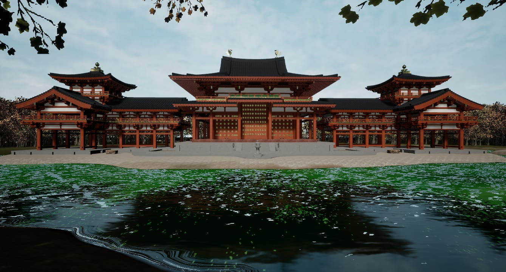
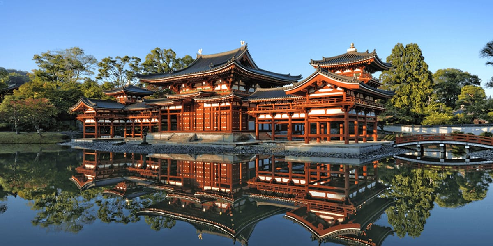

BYŌDŌ-IN PHOENIX HALL
University project exploring how historical spaces can function as interactive museum exhibits — accuracy to the record as a non-negotiable creative constraint.
A faithful reconstruction of the Byōdō-in Phoenix Hall as a static VR environment, part of the 'Echoes of the Past' project. Modelled in Blender from Machiya architectural reference and Heian-period (794–1185) design language, textured in Substance Painter, and rendered as 8K 360° panoramas in Unreal Engine 5. The project was not an interpretation — it was a reconstruction. Every decision had to be justifiable against historical evidence. Where the evidence was ambiguous, the most conservative reading was adopted.
The proportional systems of classical Japanese architecture — ken-based modular grids — were applied throughout, making this as much architectural research as digital craft.
YEAR
2025
TOOLS
Blender, Substance Painter, UE5
ROLE
Sole designer
COMPLEXITY
~243 actors
DURATION
14 weeks
PROCESS

01
REFERENCE
Architectural reference was drawn from Machiya construction techniques and Heian-period design language. Period illustrations, UNESCO World Heritage documentation, and academic architectural surveys were cross-referenced to ensure the reconstruction remained historically accurate rather than interpretive. The proportional systems of classical Japanese architecture — ken-based modular grids — were applied throughout.

02
BLOCKOUT
The temple was constructed in Blender using a modular approach — core structural elements (columns, beams, bracketing systems, roof tiles) were built to historical measurements and instanced across the structure. The asymmetrical wing extensions of the Phoenix Hall presented particular modelling challenges, requiring custom solutions where standard modular repetition broke down against the actual geometry of the building.

03
TEXTURING
All surface materials were created in Substance Painter using a physically based rendering workflow. Aged cypress wood, oxidised copper roof tiles, lacquered vermilion surfaces, and worn stone paving were each developed from photographic reference. The objective was to represent the material language of a structure over a thousand years old — not pristine, not derelict, but carrying the specific patina of careful, continuous preservation.

04
VR RENDER
Final output was a set of 8K 360° panoramic renders produced in Unreal Engine 5, designed for deployment as a museum exhibit experience via Meta Quest 3S. The environment was lit to approximate the atmospheric quality of filtered light through paper shoji screens — a defining visual characteristic of Heian-period interior spaces. Lumen global illumination was tuned to capture the soft, diffuse quality of indirect light specific to the space.
OUTCOME


Working against the historical record taught me that accuracy and creativity aren't opposites. When interpolating between references isn't an option, every modelling and material decision has to be justified — and that rigour produced a more coherent result than any open-ended brief could have.